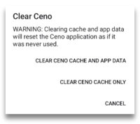

Особливості
Панель інструментів
Внизу екрана ви побачите панель з різними кнопками. Деякі з них, ймовірно, зрозумілі самі по собі, інші — менш. Давайте коротко розглянемо кожну з них:
Кнопка «Головна»
Перша – це знайома кнопка «Головна».

Ви можете налаштувати цю кнопку так, щоб вона була відображена або прихована, але перейдіть у Налаштування > Налаштування > Показати кнопку «Головна»

Кнопка Ceno
Далі йде кнопка Ceno. Натиснувши на неї, ви відкриєте інформаційний екран, який показує, звідки були отримані компоненти веб-сайту. Ми описуємо цей екран більш детально в розділах «Особистий та публічний перегляд».
Кнопка безпечного з'єднання
Коли ви вводите адресу веб-сайту, до якого хочете отримати доступ, ви побачите
кнопку «Безпечне з'єднання», позначену маленьким замком або маленьким щитом,
що вказує на те, що ваше з'єднання з певним веб-сайтом є безпечним.
Якщо замок або щит перекреслені лінією, це означає, що з'єднання з цим
веб-сайтом не є безпечним. Це так само, як і в інших браузерах.
Примітка: незважаючи на те, що з'єднання з цим конкретним веб-сайтом не є безпечним, на піктограмі Ceno є маленька зелена крапка. Ця крапка не означає, що з'єднання є безпечним, а лише те, що дані були отримані безпосередньо з оригінального веб-сайту.
Якщо ви натиснете на нього, ви побачите деталі цього з’єднання. Як ілюстрацію, ми наводимо приклади скріншотів безпечного та незахищеного з’єднання.
Кнопка «Очистити»
Перша кнопка праворуч від адресного рядка — це кнопка «Очистити» у формі маленької мітли.
Натиснувши на нього, користувач може вибрати, чи очистити всі дані Ceno, ніби Ceno ніколи не використовувався, чи очистити лише те, що Ceno зберігав у кеші. Перший варіант очищає всі налаштування, закладки, параметри та індивідуальні налаштування, а другий — лише веб-сайти, які додаток Ceno зберігав у кеші на вашому пристрої.
Якщо ви перейдете до Налаштування > Налаштування > Кнопка очищення, ви можете вибрати, де ви хочете, щоб кнопка очищення відображалася на панелі інструментів чи в меню.

Натиснувши на опцію Default behavior (Стандартна поведінка), ви відкриєте діалогове вікно, в якому зможете вибрати, що має робити кнопка Clear (Очистити) при натисканні. Вона може запропонувати вам підказку, як на знімку екрана вище, або одразу видалити весь кешований вміст чи навіть усі дані Ceno.

Кнопка вкладок
Далі знаходиться маленький прямокутник із числом усередині. Це число показує, скільки вкладок відкрив користувач.
Натискання на нього відкриває екран, де ви можете побачити всі відкриті вкладки.

Ви можете закривати їх по одному, якщо натиснути на вертикальне меню в правому нижньому куті, ви отримаєте опцію закрити їх усі разом.

Під час перегляду екрана вкладок у верхній частині екрана ви побачите значки для публічного або особистого перегляду, і ви можете легко перемикатися між ними.
Перегляд, коли вибрано значок публічного перегляду

Перегляд, коли вибрано особистий перегляд.

Вертикальне меню
Те, що відображається у вертикальному меню з трьох крапок у крайній правій частині панелі інструментів, залежить від контексту.
- Коли у вас відкрита сторінка веб-сайту, це меню відображатиме параметри, що стосуються цієї сторінки.

Більшість елементів у цьому меню зрозумілі самі по собі. Але якщо ви не знайомі з uBlock Origin, то це блокувальник реклами та трекерів.
Причина, чому ми об'єднуємо його з нашим браузером Ceno, полягає головним чином у запобіганні непотрібному кешуванню реклами та можливому кешуванню унікальних ідентифікаторів, пов'язаних з трекерами.
Щоб дізнатися більше про цей блокувальник реклами та відстеження, відвідайте їхню веб-сторінку.
- Якщо ви натиснете на це меню на головній сторінці Ceno, ви зможете побачити елемент, який дозволяє вам очистити Ceno (його дія така ж, як і маленька мітла на головному екрані).

- Коли ви перебуваєте на екрані вкладок, натискання цього меню надасть вам лише опцію «Закрити всі вкладки»